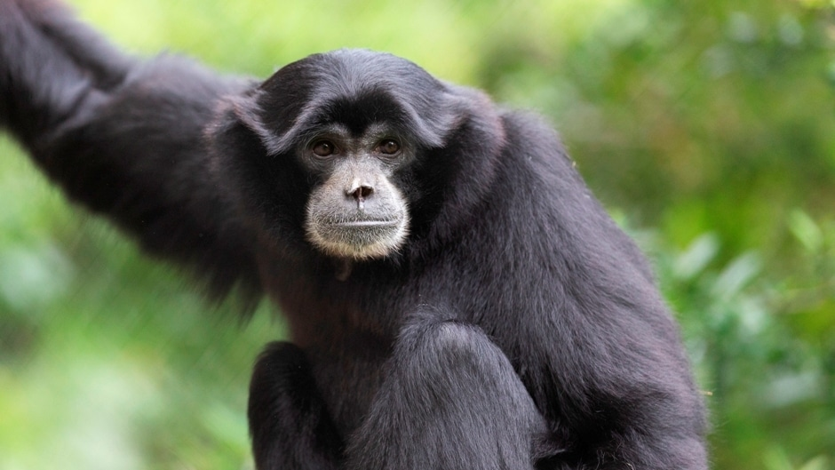
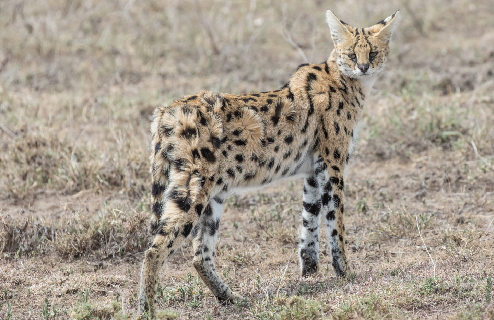
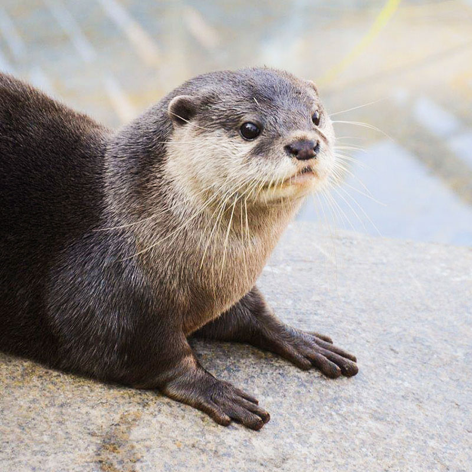
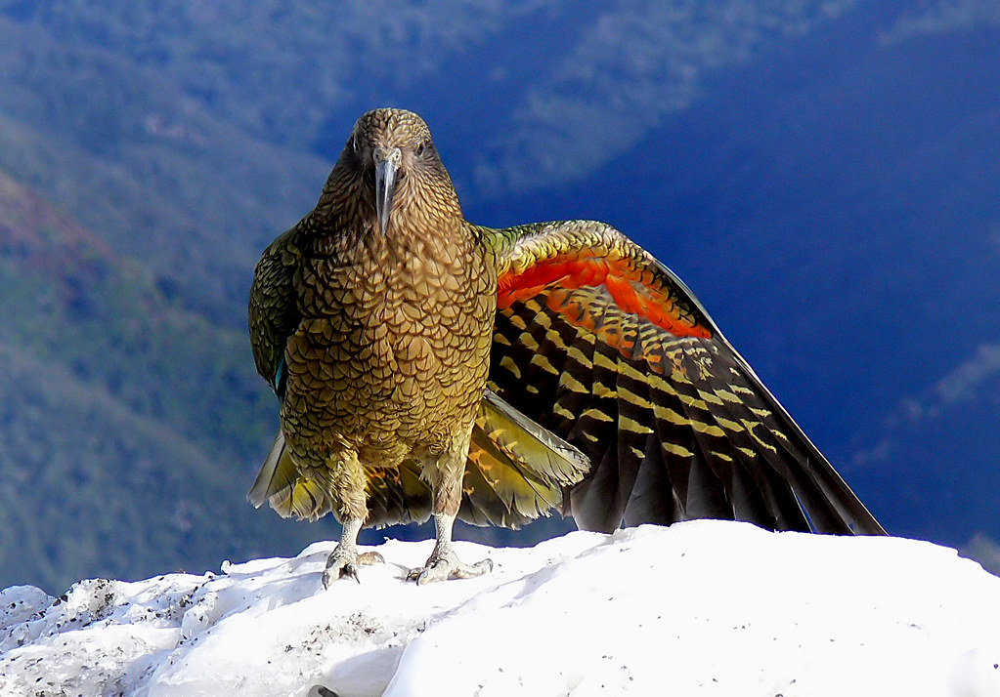

My Favourite Animals!
Meerkats
These small pack animals are found in the deserts of Southern Africa.

San Diego Zoo - Public Domain
Siamang Gibbons
These lesser apes are found along the Malay peninsula and the island of Sumatra.

Marwell Zoo - Public Domain
Servals
Serval cats are found in the wild in the savannas of Africa.

Craig Taylor - Panthera - CCO
Asian Small-Clawed Otters
As their name suggests, these otters are found in Southern Asia.

Santa Barbara Zoo - Public Domain
Kea
These unique birds are the only alpine parrot in the world, found in a small part of New Zealand.

Science Learning Hub - Public Domain